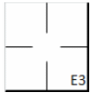
action { batter -> EF3 }

Maintenant que nous avons vu comment les règles décrivent les circonstances dans lesquelles le scoreur officiel doit signaler une erreur, nous allons montrer comment elles doivent être consignées sur la feuille de scorage.
Exemple 44: Le coureur tente de voler la deuxième base et gagne la troisième base à cause d'une erreur de lancer du receveur. Une erreur de lancer du receveur est imputée à ce dernier, lui permettant ainsi d'avancer jusqu'a la troisième base.
| WBSC | Transcription dans l'outil de scorage | Outil |
|---|---|---|
|
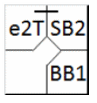 |
/* Le premier batteur atteint la première base sur 'base on ball' */ action { batter -> BB } /* Sur le batteur suivant, le coureur vole la deuxième base. Le receveur voyant le vol, relance la balle vers la troisième base mais commet une erreur de lancer */ action { runner1 -> SB e2T } |
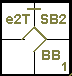 |
Exemple 45:
Le frappeur frappe une fly sur la première base dans la zone des fausses balles qui est relachée par le
défenseur de la première base. Une erreur décisive est imputée au défenseur de la première
base pour avoir prolongé la présence batteur au baton.
L'erreur est notée dans un coin du carré de première base, laissant de la place pour d'autres notes
concernant le frappeur.
| WBSC | Transcription dans l'outil de scorage | Outil |
|---|---|---|
|
 |
/* La batteur frappe une cloche dans la zone des mauvaises balles. Le défenseur de
la première base tente de rattraper la balle mais commet une erreur en la laissant retomber */ action { batter -> EF3 } |
|
Exemple 46: Le frappeur frappe une balle au sol vers le défenseur de la première base qui, après avoir récupéré la balle, malgré l'opportunité qui lui en était offerte, ne touche pas sa base, permettant ainsi au frappeur d'atteindre la base en toute sécurité. Une erreur décisive est imputée au défenseur de la première base pour ne pas avoir éliminé le frappeur-coureur.
| WBSC | Transcription dans l'outil de scorage | Outil |
|---|---|---|

|
/* La batteur frappe une balle au sol vers la première base. Le défenseur de la
première base, relâche la balle et le batteur arrive safe */ action { batter -> E3 } |

|
Exemple 47: Le frappeur envoie une balle en hauteur dans le champ extérieur. Le défenseur du champ droit rate la prise, permettant au coureur d'atteindre la première base. On impute une erreur décisive de réception au défenseur du champ droit pour ne pas avoir éliminé le coureur.
| WBSC | Transcription dans l'outil de scorage | Outil |
|---|---|---|
|
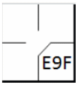 |
/* Frappe dans le champ droit mal réceptionnée par le défenseur */ action { batter -> E9F } |

|
Exemple 48:
Le frappeur frappe une balle au sol vers l'arrêt-court, qui la récupère à temps pour éliminer le coureur,
mais rate son lancer vers la première base, permettant à ce dernier d'avancer en deuxième base. Imputez une erreur de
lancer décisive à l'arrêt-court pour ne pas avoir éliminé le coureur. Inscrivez l'erreur sur la première base et une
flèche vers la base finalement atteintte (ici, la deuxième base).
NOTE: Enregistrez une seule erreur pour l'avance de deux bases.
| WBSC | Transcription dans l'outil de scorage | Outil |
|---|---|---|

|
/* Le frappeur frappe une balle vers l'arrêt court qui la rattrape mais rate sa
relance. Le batteur coureur profite de l'erreur pour gagner la deuxième base. */ action { batter -> E6T+ } |

|
Exemple 49:
Avec un coureur en première base, le frappeur frappe une balle au sol vers l'arrêt-court, qui la récupère à temps
pour éliminer le coureur et lance en deuxième base.
Le défenseur de la deuxième base, qui s'était rapidement déplacé pour couvrir la deuxième base, ne parvient pas à
attraper la balle, permettant ainsi aux deux coureurs d'atteindre les bases sains et saufs. Imputez une erreur défensive
décisive au défenseur de la deuxième base pour ne pas avoir éliminé le coureur, et créditez l'arrêt-court d'une
assistance.
| WBSC | Transcription dans l'outil de scorage | Outil |
|---|---|---|
|
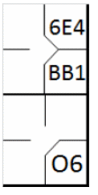 |
/* Le premier batteur gagne la premier base sur un 'base on ball' */ action { batter -> BB } /* Le deuxième batteur frappe une balle sur l'arrêt court qui rattrape la balle et la relai au défenseur de la deuxième base pour retirer le coureur. Le défenseur de la deuxième base relache la balle et le coureur est sauf en deuxième base */ action { batter -> O6 , runner1 -> 6E4 } |

|
Exemple 50:
Avec un coureur en première base, le frappeur frappe vers la deuxième base, qui laisse passer la balle
entre ses jambes.
Le frappeur-coureur atteint la première base et le coureur avance jusqu'en troisième base.
Imputez une erreur décisive de réception au défenseur de la deuxième base pour ne pas avoir éliminé le
frappeur-coureur et avoir permis à ce dernier d'atteindre la troisième base.
NOTE: Une seule erreur a été constatée, permettant à deux coureurs d'avancer d'une ou plusieurs bases.
| WBSC | Transcription dans l'outil de scorage | Outil |
|---|---|---|

|
/* Le premier batteur gagne la première base sur un 'base on ball' */ action { batter -> BB } /* Le deuxième batteur frappe une balle sur le défenseur de la deuxième base qui laisse passer la balle. Le batteur gagne la première base sur l'erreur et le coureur profite de l'erreur pour gagner la troisième base */ action { batter -> E4 , runner1 -> + (2) } |
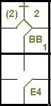 |
Exemple 51:
Au troisième frappeur, le coureur en première base tente de voler la deuxième base. Le receveur effectue un
excellent relais vers la deuxième base, largement à temps pour éliminer le coureur. Étrangement, ni le joueur de
deuxième base ni l'arrêt-court ne se déplacent pour couvrir la deuxième base, permettant ainsi au coureur de voler
la base.
Le scoreur officiel peut demander à l'entraîneur de l'équipe en défense lequel des deux joueurs en défense aurait
dû se rendre sur la base (en l'occurrence, le défenseur de la deuxième base). Il faut alors imputer une faute défensive
décisive au défenseur de la deuxième base pour ne pas avoir éliminé le coureur et accorder une assistance au receveur.
En cas de tentative de vol de base, il faut imputer un retrait au receveur et au coureur.
| WBSC | Transcription dans l'outil de scorage | Outil |
|---|---|---|
|
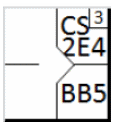 |
/* Le premier batteur gagne la première base sur un 'base on ball' */ action { batter -> BB } /* Le coureur tente de voler la deuxième base et aurait échoué si le défenseur de la deuxième base n'avait pas commis d'erreur. */ action { runner1 -> CS2E4 } |

|
Exemple 52:
Avec un coureur en première base, le frappeur frappe un simple vers le champ centre, permettant au coureur
d'atteindre la deuxième base.
Le joueur de champ centre lance la balle vers la troisième base pour empêcher le coureur d'avancer. Le coureur
entre la deuxième et la troisième base est piégé. La situation se prolonge, avec la participation de plusieurs joueurs
défensifs.
Finalement, le joueur d'arrêt-court rate son lancer au-dessus da la troisième base et le coureur en profite pour
marquer un point. Le frappeur-coureur atteint ensuite la deuxième base.
Imputer une erreur de lancer décisive au joueur d'arrêt-court, pour avoir permis au coureur de marquer, et
une assistance à chaque joueur défensif ayant participé à l'action.
| WBSC | Transcription dans l'outil de scorage | Outil |
|---|---|---|

|
/* Le premier batteur gagne la première base sur un 'base on ball' */ action { batter -> BB } /* Le deuxième batteur frappe un hit en champs centre, le coureur en une gagne la deuxième base. Ce coureur tente de prendre aussi la troisième base et y arrive sur une erreur de l'arrêt court, le batteur coureur profite de la souricière pour prendre la deuxième base */ action { batter -> 1B8 O8 , runner1 -> + 8564E6T+ } |

|
Exemple 53:
Avec un coureur en première base, le frappeur frappe un simple au champ centre, permettant au coureur
d'atteindre la troisième base.
Le défenseur de champ centre lance la balle au joueur de troisième base pour stopper la progression du
coureur vers cette base.
Le frappeur-coureur profite de l'occasion pour tenter de rejoindre la deuxième base. Cependant, la balle rebondit
de façon inattendue et la défense la laisse échapper. S'en apercevant, le coureur en troisième base marque le point.
Imputer une faute de lancer supplémentaire au joueur de champ centre pour avoir permis à l'équipe adverse de
marquer.
| WBSC | Transcription dans l'outil de scorage | Outil |
|---|---|---|
|
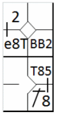 |
/* Le premier batteur gagne la première base sur un 'base on ball' */ action { batter -> BB } /* Le deuxième frappeur envoie la balle au champ centre, et le coureur en première base avance de deux bases. Le joueur de champ centre lance la balle au receveur, mais commet une erreur de lancer, et le coureur en troisième base marque. Le coureur en première base profite du lancer suivant pour avancer en deuxième base. */ action { batter -> 1B8 T85 , runner1 -> ++ e8T } |
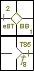 |
Exemple 54:
Avec un coureur en première et en deuxième base et aucun retrait, le frappeur frappe un fly à l'intérieur
du terrain et est retiré. La balle ayant échappé à la volée suite à une erreur de l'arrêt-court, le coureur de tête
profite de cette erreur et avance d'une base.
Imputer une erreur de réception supplémentaire au joueur d'arrêt-court pour avoir permis au coureur d'avancer.
| WBSC | Transcription dans l'outil de scorage | Outil |
|---|---|---|
|
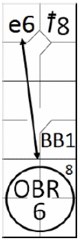 |
/* Le premier frappeur réussit un double au champ centre. */ action { batter -> 2B8 } /* Le deuxième frappeur gagne la première base sur un « Base on ball ». */ action { batter -> BB } /* Le troisième frappeur frappe une fly dans le champ intérieur, l'arbitre annonce un Infield fly : le frappeur est retiré. L'arrêt-court laisse tomber la balle, et le coureur en deuxième base en profite pour atteindre le troisième but. */ action { batter -> OBR8-6 , runner2 -> e6 } |
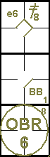 |
Exemple 55:
Avec un coureur en deuxième base, le frappeur réussit un simple, le coureur atteint la troisième base et
continue vers le marbre.
Le défenseur de troisième base intervient et tente de l'empêcher de progresser. L'arbitre accorde un point
au coureur pour obstruction.
Si le scoreur officiel estime que l'obstruction a été un facteur déterminant dans l'attribution du point,
il doit l'enregistrer comme indiqué dans l'exemple. Il faut alors imputer une erreur de base supplémentaire au
défenseur de la troisième base pour avoir commis l'obstruction.
| WBSC | Transcription dans l'outil de scorage | Outil |
|---|---|---|

|
/* Le premier batteur frappe un double dans le champ gauche */ action { batter -> 2B7 } /* Le deuxième batteur frappe un hit dans le champ centre, le coureur en 2 en profite pour gagner la troisième base. Le défenseur tente de gêner le coureur, arrivant en troisième base, il y a obstruction */ action { batter -> 1B8 , runner2 -> + ob5 } |
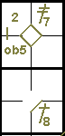 |
Exemple 56: Si toutefois le scoreur officiel considère que le coureur aurait marqué malgré l'obstruction, il doit consigner l'action comme indiqué à droite.
| WBSC | Transcription dans l'outil de scorage | Outil |
|---|---|---|
|
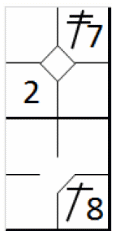 |
/* Le premier batteur frappe un double dans le champ gauche */ action { batter -> 2B7 } /* Le deuxième frappeur envoie la balle au champ centre, et le coureur en deuxième base en profite pour atteindre la troisième. Le joueur défensif tente d'empêcher le coureur d'atteindre la troisième base, mais il n'y a pas d'interférence. */ action { batter -> 1B8 , runner2 -> ++ } |

|
Exemple 57:
Fly entre les défenseurs de champs gauche et centre. Ils courent tous deux vers la balle; le champ gauche
l'attrape, mais le champ centre le percute et il laisse échapper la balle. Le frappeur-coureur atteint la première base.
Imputez une erreur décisive sur la balle en l'air au joueur de champ centre pour avoir empêché le joueur de
champ gauche d'effectuer l'élimination.
| WBSC | Transcription dans l'outil de scorage | Outil |
|---|---|---|

|
/* Le premier frappeur envoie une balle en hauteur entre le champ gauche et le
champ centre. Le joueur de champ gauche attrape la balle, mais le joueur de champ centre le bouscule,
ce qui lui fait lâcher la balle. */ action { batter -> E8F } |
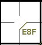 |
Exemple 58:
Le frappeur frappe une balle au sol vers l'arrêt-court qui laisse échapper la balle, bien que, de l'avis du
scoreur officiel, il aurait eu le temps de la lancer au défenseur de la première base.
Il récupère la balle et la lance quand même en première base, effectuant un mauvais lancer et permettant au
frappeur-coureur d'avancer d'une autre base.
Attribuer deux erreurs à l'arrêt-court: une erreur décisive et une erreur de base supplémentaire, la première
étant une erreur de champ et la seconde une erreur de lancer, car le frappeur-coureur a atteint chacune des deux bases
sur une erreur différente.
| WBSC | Transcription dans l'outil de scorage | Outil |
|---|---|---|
|
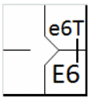 |
/* Le frappeur frappe une balle au sol vers l'arrêt-court qui la laisse échapper,
bien que, de l'avis du scoreur officiel, il aurait eu le temps de la relancer an première base. Il récupère
la balle et la relance tout de même en première base, effectuant un mauvais lancer et permettant au
frappeur-coureur d'avancer d'une base suplémantaire. */ action { batter -> E6 e6T } |

|
Exemple 59:
Au troisième frappeur, le coureur en première base tente de voler la deuxième, mais le receveur anticipe
le lancer vers la deuxième base. Ce dernier, bien qu'ayant eu le temps d'effectuer l'élimination, laisse échapper
la balle. Le coureur s'en aperçoit et, après avoir atteint la deuxième base, continue vers la troisième.
Le défenseur de la deuxième base récupère la balle et la lance au défenseur de la troisième base, qui effectue
l'élimination.
Imputez une erreur défensive décisive au défenseur de la deuxième base, qui a manqué la prise, et créditez le
défenseur de la troisième base d'un retrait, ainsi que le receveur et le défenseur de la deuxième base d'une assistance.
Créditez un vol de base réussi à la fois au receveur et au coureur.
| WBSC | Transcription dans l'outil de scorage | Outil |
|---|---|---|

|
/* Le premier frappeur gagne la première base sur un « base on ball ». */ action { batter -> BB } /* Il tente alors de voler la première base, et sans l'erreur du défenseur de la deuxième base, il aurait été éliminé. Il profite de cette erreur pour essayer d'atteindre la troisième base, mais il est éliminé par le défenseur de la troisième base avec l'aide du défenseur de la deuxième base. */ action { runner1 -> CS2E4 45 } |
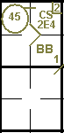 |
Exemple 60:
Avec un coureur en première base, le frappeur envoie une balle en l'air vers le champ gauche. Le champ gauche
ne parvient pas à attraper la balle, permettant au coureur d'atteindre la troisième base. Le frappeur-coureur constate
l'erreur et tente de rejoindre la deuxième base, mais est éliminé par le défenseur de la deuxième base grâce à une
assistance du champ gauche.
Imputez une erreur décisive sur une balle en l'air au champ gauche pour avoir permis au frappeur-coureur
d'atteindre la première base, et créditez une assistance au champ gauche et un retrait au défenseur de la deuxième base.
| WBSC | Transcription dans l'outil de scorage | Outil |
|---|---|---|
|
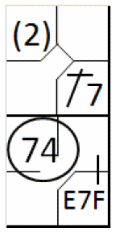 |
/* Le premier frappeur réussit un simple au champ gauche. */ action { batter -> 1B7 } /* Le deuxième frappeur envoie une balle en l'air au champ gauche, et le joueur de champ commet une erreur en la laissant tomber. Le coureur en première base en profite et avance de deux bases. Le frappeur avance ensuite en deuxième base, mais est retiré par un relais du champ gauche vers la deuxième base */ action { batter -> E7F 74 , runner1 -> (2)+ } |

|
Exemple 61:
Avec un coureur en deuxième base, le frappeur envoie une balle en hauteur vers le champ centre, qui la rate.
Le coureur est éliminé par le défenseur de la troisième base grâce à une assistance du champ centre qui court vers
la troisième base.
Imputez une erreur décisive sur une balle en l'air au joueur de champ centre pour avoir permis au frappeur-coureur
d'atteindre la première base, et créditez une assistance au joueur de champ centre et un retrait au défenseur de la
troisième base.
| WBSC | Transcription dans l'outil de scorage | Outil |
|---|---|---|
|
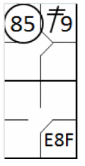 |
/* Le premier frappeur réussit un double au champ droit. */ action { batter -> 2B8 } /* Le deuxième frappeur envoie une balle en l'air au champ centre, mais le joueur de champ commet une erreur de prise. Le coureur tente alors d'atteindre la troisième base, mais est retiré par le défenseur de la troisième base assisté par le joueur de champ centre. */ action { batter -> E8F , runner2 -> 85 } |
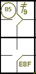 |
Exemple 62:
Le frappeur frappe un simple vers le champ centre qui, en tentant de rattraper la balle, la laisse échapper
et permet au coureur, déjà arrivé en deuxième base, de poursuivre sa route vers la troisième. Entre-temps, le champ
gauche, en se précipitant pour couvrir la balle, la récupère et aide le défenseur de troisième base, qui effectue
l'élimination.
Imputer une erreur de champ supplémentaire au joueur de champ centre pour avoir permis au frappeur-coureur
d'atteindre la deuxième base, et créditer une assistance au joueur de champ gauche et un retrait au défenseur de la
troisième base.
| WBSC | Transcription dans l'outil de scorage | Outil |
|---|---|---|

|
/* Le premier frappeur envoie la balle au champ centre. Le défenseur de champ centre
la manque, et le coureur en profite pour atteindre la deuxième base. Il tente d'atteindre la troisième base,
mais est éliminé par le défenseur de la troisième base, aidé par le défenseur du champ gauche. */ action { batter -> 1B8 e8 75 } |
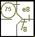 |
Exemple 63:
Avec le frappeur numéro 3 au bâton, le receveur, après avoir attrapé le lancer, lance en première base pour
essayer d'éliminer le coureur qui est hors de sa base, mais le défenseur de la première base laisse tomber la balle
de son gant, ne parvenant ainsi pas à effectuer l'élimination.
Imputez une erreur décisive au défenseur de la première base pour ne pas avoir éliminé le coureur et
créditez une assistance au receveur.
| WBSC | Transcription dans l'outil de scorage | Outil |
|---|---|---|

|
/* Le premier frappeur atteint la première base sur un 'Base on ball' */ action { batter -> BB } /* Le coureur aurait dû être retiré sur la tentative de pick off sans l'erreur du défenseur de la première base. */ action { noAdvance on runner1 -> PO2E3 } |

|
Exemple 64:
Avec le frappeur numéro 3 au bâton et un coureur en première base, le receveur demande un lancer extérieur et
lance rapidement vers la première base, mais rate son lancer, permettant au coureur d'atteindre la deuxième base.
Imputer une erreur non décisive de lancer au receveur.
| WBSC | Transcription dans l'outil de scorage | Outil |
|---|---|---|
|
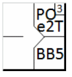 |
/* Le premier frappeur atteint la première base sur un 'Base on ball' */ action { batter -> BB } /* Le coureur gagne la deuxième base sur un pick off raté à caUSe du mauvais lancer du receveur. */ action { runner1 -> POe2T } |

|
Exemple 65:
Le receveur ne parvient pas à attraper la troisième prise et récupère la balle, mais rate sa tentative
d'assistance en première base.
Imputez une erreur de lancer décisive au receveur pour ne pas avoir réussi à éliminer le coureur, et créditez
le lanceur ainsi que le frappeur d'un retrait sur trois prises.
| WBSC | Transcription dans l'outil de scorage | Outil |
|---|---|---|

|
/* Troisième prise, le receveur récupère la balle mais commet une erreur de lancer */ action { batter -> KSE2T } |
Exemple 66:
Le receveur ne parvient pas à attraper la troisième prise, récupère la balle et la lance au défenseur de la
première base, qui rate la prise.
Imputer une erreur décisive au défenseur" de la première base pour ne pas avoir réussi à éliminer le coureur,
attribuer une assistance au receveur et un retrait sur des prises au lanceur.
| WBSC | Transcription dans l'outil de scorage | Outil |
|---|---|---|

|
/* Troisième prise, le receveur récupère la balle et la lance au défenseur de la
première base qui ne la contrôle pas. */ action { batter -> KS2E3 } |
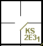 |
Exemple 67: Avec un coureur en troisième base et moins de deux retraits, le frappeur-coureur frappe une fausse balle que le défenseur du champ gauche laisse échapper. Si le scoreur officiel juge que l'action n'était pas intentionnelle, et qu'elle visait à empêcher un point, il doit infliger une erreur (décisive) au défenseur du champ gauche pour avoir permis au frappeur-coureur de retourner au bâton.
| WBSC | Transcription dans l'outil de scorage | Outil |
|---|---|---|

|
/* Le premier frappeur réussit un triple au champ droit. */ action { batter -> 3B9 } /* Le deuxième frappeur envoie une balle en hauteur dans la zone des fausses balles. Le défenseur du champ gauche aurait pu l'attraper en vol, mais il commet une erreur. */ action { batter -> E7F } |
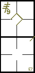 |
Seuls deux types d'erreurs peuvent, s'ils sont commis, donner lieu à un double jeu.
NOTE: Il ne doit y avoir aucun doute quant à la dynamique des erreurs décrites ci-dessus avant qu'un double jeu ne soit imputé au frappeur, en l'absence de deux retraits. Dans le cas contraire, il ne s'agit ni d'un double ni d'un triple jeu.
Dans les huit exemples suivants, qui partent tous de la même situation initiale, l'action en question aboutit à des résultats différents selon les différentes stratégies défensives mises en œuvre.
NOTE: Dans les huit exemples suivants, à l'exception des numéros 73 et 75, bien qu'il n'y ait pas eu deux retraits, un double jeu est toujours imputé au frappeur.
Exemple 68:
Avec un coureur en première base, le frappeur frappe une balle au sol vers l'arrêt-court, qui aide
le défenseur de la deuxième base à éliminer le coureur.
Le défenseur de la deuxième base lance vers la première base, mais le défenseur de la premier base rate
la prise et l'arbitre, après avoir annoncé l'élimination du coureur, déclare le frappeur sauf.
L'arbitre ayant annoncé « out safe », il faut imputer une erreur de champ au défenseur de la première base.
| WBSC | Transcription dans l'outil de scorage | Outil |
|---|---|---|
|
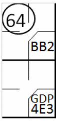 |
/* Le premier frappeur atteint la première base sur un 'Base on ball' */ action { batter -> BB } /* Le frappeur envoie une balle au sol vers la deuxième base. Le défenseur de la deuxième base renvoie la balle à l'arrêt-court pour éliminer le coureur. L'arrêt-court renvoie la balle au défenseur de la première base, qui aurait pu éliminer le frappeur s'il avait attrapé la balle. */ action { batter -> GDP4E3 , runner1 -> 46 } |
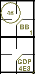 |
Exemple 69:
Même situation que dans l’exemple précédent, mais l’arrêt-court, après avoir récupéré la balle, dépasse le défenseur
de la deuxième base puis fait une passe au défenseur de la première base à temps pour effectuer le retrait.
Comme l'arrêt-court a raté la deuxième base, il faut lui imputer une erreur décisive.
| WBSC | Transcription dans l'outil de scorage | Outil |
|---|---|---|

|
/* Le premier frappeur atteint la première base sur un 'Base on ball' */ action { batter -> BB } /* Le deuxième frappeur envoie une balle au sol vers l'arrêt-court, qui ne parvient pas à l'attraper. Sans cette erreur, le coureur aurait été retiré. L'arrêt-court relance la balle au défenseur de la première base pour éliminer le frappeur. */ action { batter -> GDP63 , runner1 -> E6 } |
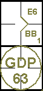 |
Exemple 70:
Dans la même situation, les deux erreurs sont commises, par l'arrêt-court et par le défenseur de la première base.
Dans ce cas, deux erreurs sont imputées.
| WBSC | Transcription dans l'outil de scorage | Outil |
|---|---|---|
|
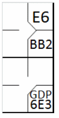 |
/* Le premier frappeur atteint la première base sur un 'Base on ball' */ action { batter -> BB } /* Le deuxième frappeur envoie une balle au sol vers l'arrêt-court, qui ne parvient pas à l'attraper. Sans cette erreur, le coureur aurait été retiré. L'arrêt-court lance la balle au joueur de premier but, qui la relâche, et le frappeur/coureur est sauf. */ action { batter -> GDP6E3 , runner1 -> E6 } |
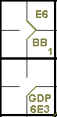 |
Exemple 71:
Dans cet exemple, les deux joueurs offensifs sont retirés, mais le défenseur de la deuxième base laisse tomber
la balle (lancée par l'arrêt-court) après avoir touché la deuxième base, puis la récupère à temps pour toucher la base
et aider le défenseur de la première base à éliminer le frappeur-coureur.
L'erreur, bien que non décisive, n'annule pas la passe décisive du joueur d'arrêt-court.
| WBSC | Transcription dans l'outil de scorage | Outil |
|---|---|---|
|
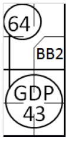 |
/* Le premier frappeur atteint la première base sur un 'Base on ball' */ action { batter -> BB } /* Le deuxième frappeur envoie une balle au sol vers l'arrêt-court, qui ne parvient pas à l'attraper. Malgré cette erreur, il réussit à relayer la balle au défenseur de la deuxième base, ce qui permet d'éliminer le coureur. Le défenseur de la deuxième base relaie ensuite la balle au défenseur de la première base, et le frappeur/coureur est retiré. */ action { batter -> GDP43 , runner1 -> 64 } |
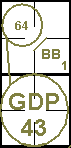 |
Exemple 72:
Les deux joueurs offensifs sont éliminés. Le défenseur de la deuxième base touche la base après avoir attrapé
la balle frappée et la lance au défenseur de la première base, mais le défenseur de la première base laisse tomber la
balle, puis la récupère à temps pour éliminer le frappeur-coureur.
Malgré l'erreur, le défenseur de la première base récupère la balle et parvient ensuite à éliminer le
frappeur-coureur, ce qui conduit finalement au double jeu.
| WBSC | Transcription dans l'outil de scorage | Outil |
|---|---|---|
|
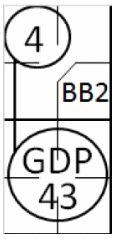 |
/* Le premier frappeur atteint la première base sur un 'Base on ball' */ action { batter -> BB } /* Le deuxième frappeur envoie une balle au sol vers la deuxième base, qui la rattrape et touche son base, éliminant ainsi le coureur. Il renvoie la balle au défenseur de la première base, qui la laisse tomber mais la rattrape à temps pour éliminer le frappeur. */ action { batter -> GDP43 , runner1 -> 4 } |
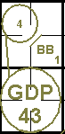 |
Exemple 73:
Avec un coureur en première base, le frappeur frappe une balle au sol vers l'arrêt-court, qui lance en
deuxième base et élimine le coureur.
Le défenseur de la deuxième base lance alors vers le défenseur de la première base, mais rate son lancer,
permettant ainsi au frappeur-coureur d'atteindre la deuxième base.
Imputer une erreur de lancer non décisive au défenseur de la deuxième base pour avoir permis au frappeur-coureur
d'atteindre la deuxième base.
Rappelons qu'en aucun cas une erreur ne doit être imputée au joueur défensif pour le coureur-frappeur atteignant
la première base, même si, de l'avis du scoreur officiel, il aurait pu effectuer l'élimination, car le lancer a été
effectué pour compléter un double jeu.
| WBSC | Transcription dans l'outil de scorage | Outil |
|---|---|---|

|
/* Le premier frappeur atteint la première base sur un 'Base on ball' */ action { batter -> BB } /* Le deuxième frappeur envoie une balle au sol vers l'arrêt-court, qui la relance au défenseur de la deuxième base. Ce dernier élimine le coureur. Le défenseur de la deuxième base rate son relais vers la première base. Le frappeur/coureur en profite et atteint la deuxième base. */ action { batter -> O6 e4T , runner1 -> 64 } |
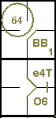 |
Exemple 74: Avec un coureur en première base, le frappeur frappe une balle au sol vers l'arrêt-court, qui aide le défenseur de la deuxième base à éliminer le coureur. Le défenseur de la deuxième base lance en première base, mais le défenseur de la première base rate la réception. Le coureur est éliminé en deuxième base suite à cette erreur. Il ne s'agit pas d'un double jeu défensif.
| WBSC | Transcription dans l'outil de scorage | Outil |
|---|---|---|

|
/* Le premier frappeur atteint la première base sur un 'Base on ball' */ action { batter -> BB } /* Le frappeur frappe une balle au sol vers l'arrêt-court, qui l'attrape et la lance au défenseur de la deuxième base pour éliminer le coureur. Le joueur défensif lance la balle au défenseur de la première base, qui la relâche. Le frappeur/coureur tente d'atteindre la deuxième base, mais est éliminé. */ action { batter -> GDP4E3 36 , runner1 -> 64 dontCountAsDoublePlay } |
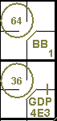 |
La question de savoir s'il faut attribuer le double jeu ou non se pose plus clairement dans le cas suivant :
Exemple 75:
Coureur en première base et moins de deux retraits. Le frappeur frappe la balle vers l'arrêt-court qui la
relance au défenseur de la deuxième base, forçant le coureur à être retiré. Le défenseur de la deuxième base relance
en première base pour éliminer le frappeur, mais le lancer est imprécis et le frappeur est sauf. Voyant la balle
échapper au défenseur de la première base, le coureur avance en deuxième base (sur l'erreur de lancer). À ce moment-là,
le défenseuf du champ droit récupère la balle et la relance en deuxième base pour éliminer le coureur. Bien que deux
retraits aient été effectués successivement, aucun double jeu n'est marqué en raison de l'erreur survenue entre-temps.
| WBSC | Transcription dans l'outil de scorage | Outil |
|---|---|---|

|
/* Le premier frappeur atteint la première base sur un 'Base on ball' */ action { batter -> BB } /* Le frappeur frappe une balle au sol vers l'arrêt-court, qui la rattrape et la lance au défenseur de la deuxième base pour éliminer le coureur. Le défenseur la relance en première base, qui la lâche, mais il est trop tard. Le frappeur tente d'atteindre la deuxième base, mais il est éliminé. */ action { batter -> O6 96 , runner1 -> 64 dontCountAsDoublePlay } |

|
ATTENTION: Inscrivez dans les « notes » du rapport de score la raison de l’absence d’une ligne de double jeu (Exemples 74 et 75).